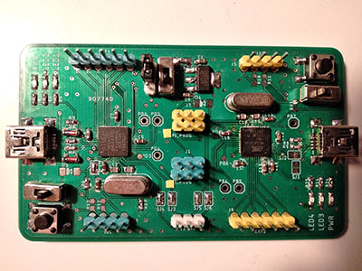
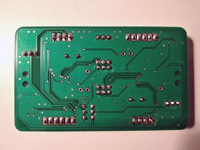
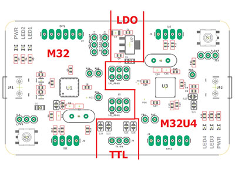

aspduno is a hybrid development board that combines the design of both usbasp ( implemented on atmega32) and arduino leonardo (utilizes an atmega32u4). 6 external pads, I2C and 3 LEDs are brought out for both microcontrollers. A LDO (TC1262) is used to convert 5V to 3.3V for sensors if needed.

front

back
The picture below gives an overview of the board. It has two separated main sections, one has a M32 and the other has a M32U4. The two sections are connected through the LDO and the TTL in the middle. They can also be connected via the ISP connecters in the middle. For more details please refer to the schematics at the end.

section overview
The idea is that the two onboard atmega microcontroller can interact with each other to offer flexible application operation scheme. Currently there are three schemes of operation:
1, the onboard m32 can be used as a standalone development section (program by an external ISP programmer). In the meantime, onboard m32 itself can be programed as an onboard usbasp programmer.
2, the onboard m32u4 can be used as a standalone development section (program by an external ISP programmer or using the onboard usbasp described in scheme 1), or be programed as arduino leonardo once the arduino bootloader is burned.
3, similar to the arduino uno, the m32u4 can be programed as a usb to serial bridge and used to upload sketch to the onboard m32( with the MightyCore bootloader from Hans).
When building the board, an external ISP programmer is necessary to initialize the board. For switching between the operation schemes, the two microcontrollers need be wired accordingly.
This is my first board design, the board does not fit any specific use case other than generic prototyping. For sure the board has problems that I am not aware of, but after all the testing I have done, everything seems to be working well.
The name aspduno is a combination of usbasp and arduino, it is not all arduino so the letter 'i' is dropped, which also shows the resembles to the arduino "uno". Even though the board looks symmetrical, but actually not, just like the word aspduno. I chose m32 over m8 in my usbasp design because the function could be expanded for usbasp, plus I have some left over m32l.